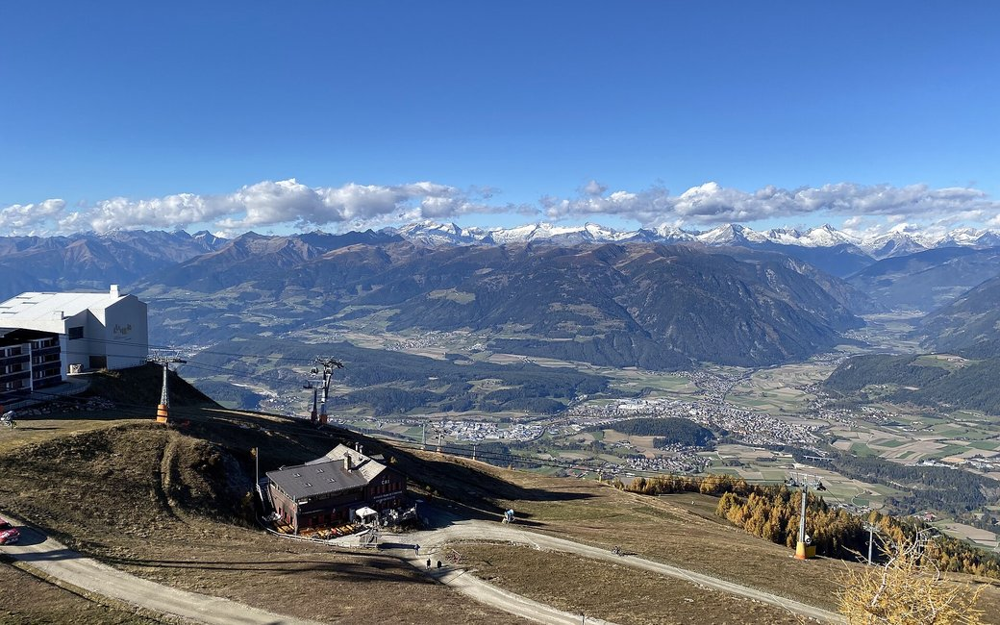

the Kronplatz summit panorama loop

Un breve anello per famiglie intorno alla cima del Kronplatz a 2.275 m: passa accanto alla campana della pace Concordia 2000, ai musei MMM Corones e LUMEN e a una serie di punti panoramici, con le Dolomiti a sud e la cresta principale delle Alpi a nord. Il percorso ufficiale indica 2,4 km e 75 m di dislivello in salita.
Qui la neve è probabile tra novembre e maggio.
Stima basata sul punto più alto del percorso (2266 m). Nessun ente turistico pubblica la stagione di questo percorso, e ogni inverno è diverso.
Stazioni a monte degli impianti sulla cima del Kronplatz (partenza ufficiale)
Indicazioni: Segnato “A” intorno alla cima: dalle stazioni a monte delle cabinovie da Reischach, Olang o dal Furkelpass, oltre il MMM Corones, il museo LUMEN, la campana della pace Concordia 2000 con il suo rilievo panoramico e i belvedere progettati da Helmut Pizzinini.
Dalla verifica ORMA della descrizione ufficiale del percorso. Segui la traccia ORMA sulla mappa e i cartelli sul posto.
Sali in funivia da Reischach, Olang o dal Furkelpass e segui i cartelli “A” intorno alla cima: 2,4 km, circa 75 m di dislivello in salita, 40 minuti più il tempo per i musei e la campana della pace. Tieni il cane al guinzaglio corto (al massimo 1,5 m) e porta la museruola al seguito, anche in funivia. Non c'è ombra e la cima è esposta al sole e al vento, quindi porta acqua e qualcosa di caldo.
La valutazione qui sopra descrive la montagna ed è la stessa per ogni cane. Quanto sia adatto al tuo dipende da corporatura, età e salute. Vedi la compatibilità di questo percorso: è calcolata per un cane di taglia media finché non aggiungi il tuo, gratis e in un minuto.
Prima di partire: la guida sicurezza cani · acqua per il cane sul sentiero · cani in funivia · incontrare un cane da guardiania
Pensi di fermarti qualche giorno? Leggi la nostra guida della zona: Lago di Braies e Tre Cime con il cane.